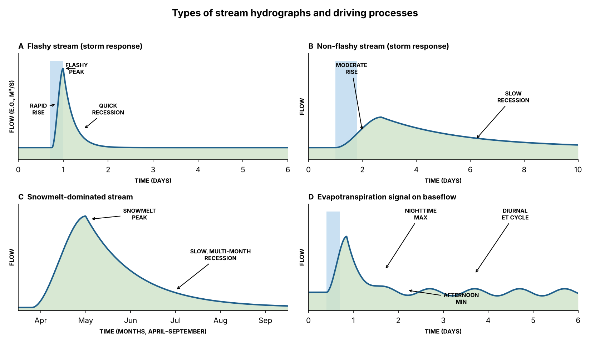
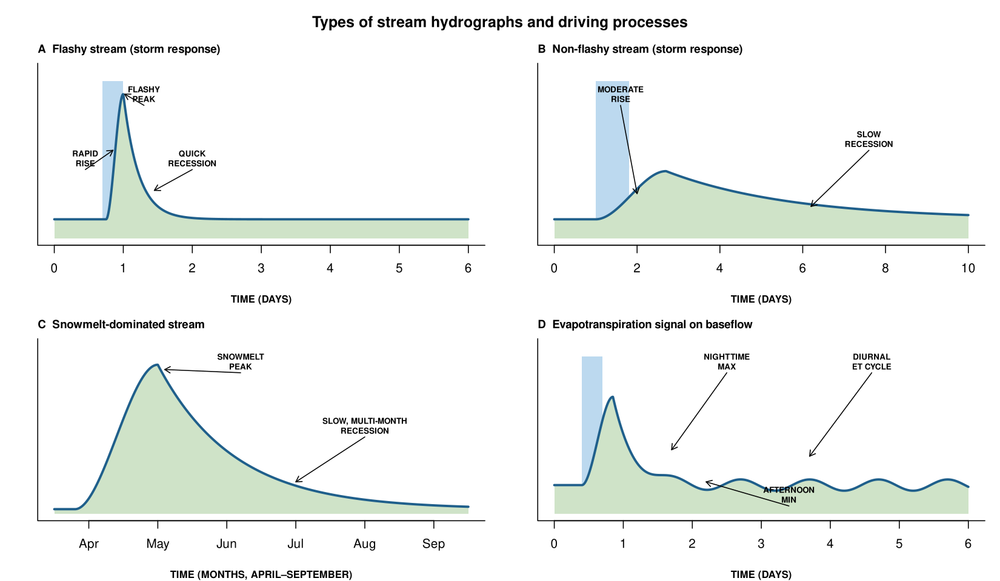
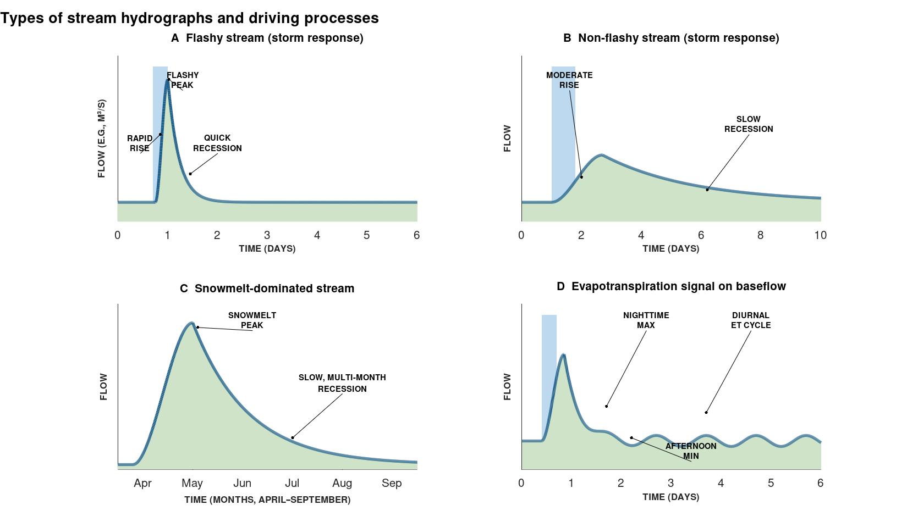

Chapter 2 · Watersheds and the Water Budget
Types of stream hydrographs and driving processes (Figure 2.3)
Flashy, non-flashy, snowmelt-dominated and ET-signal hydrographs (schematic).
Source: Chapter 2 draft; author code (comment in Chapter 2 docx, truncated at Word's 2048-character comment limit) completed from the figure image in the draft
No external data file: values are small and embedded in the code.

Code: hydrograph_types.py · image: figure_python.png

"""Types of stream hydrographs and driving processes (Figure 2.3)
Chapter 2 draft; author code (comment in Chapter 2 docx, truncated at Word's 2048-character comment limit) completed from the figure image in the draft
Run: python3 hydrograph_types.py -> figure_python.png"""
import numpy as np, matplotlib
matplotlib.use("Agg"); import matplotlib.pyplot as plt
LINE, FILL, RAIN = "#1f5f8b", "#cfe3c8", "#bcd9ef"
def rise_fall(t, t0, tp, peak, rec, base):
"""Smooth (cubic) rise to the peak at tp, exponential recession afterwards."""
q = np.full_like(t, base, dtype=float)
up = (t >= t0) & (t < tp); s = (t[up] - t0) / (tp - t0)
q[up] = base + peak * (3 * s**2 - 2 * s**3)
dn = t >= tp; q[dn] = base + peak * np.exp(-(t[dn] - tp) / rec)
return q
curves = []
t = np.linspace(0, 6, 1500); curves.append((t, rise_fall(t, 0.75, 1.0, 0.78, 0.22, 0.12))) # A flashy
t = np.linspace(0, 10, 1500); curves.append((t, rise_fall(t, 1.0, 2.7, 0.30, 3.0, 0.12))) # B non-flashy
t = np.linspace(0.5, 6.5, 1500); curves.append((t, rise_fall(t, 0.8, 2.0, 0.90, 1.1, 0.03))) # C snowmelt (months)
t = np.linspace(0, 6, 3000) # D ET signal
q = rise_fall(t, 0.4, 0.85, 0.55, 0.28, 0.18)
q += 0.035 * np.sin(2 * np.pi * (t - 0.45)) * (1 - np.exp(-np.clip(t - 0.85, 0, None) / 0.4)) * (t > 0.85)
curves.append((t, q))
panels = [{"t": "Flashy stream (storm response)", "xl": [0, 6], "xlab": "Time (days)", "ticks": None, "labs": None, "rain": [0.7, 1.0], "ylab": "Flow (e.g., m\u00b3/s)", "ann": [["FLASHY\nPEAK", 1.3, 0.9, 1.02, 0.9], ["RAPID\nRISE", 0.45, 0.5, 0.85, 0.55], ["QUICK\nRECESSION", 2.0, 0.5, 1.45, 0.3]]}, {"t": "Non-flashy stream (storm response)", "xl": [0, 10], "xlab": "Time (days)", "ticks": None, "labs": None, "rain": [1.0, 1.8], "ylab": "Flow", "ann": [["MODERATE\nRISE", 1.6, 0.9, 2.0, 0.28], ["SLOW\nRECESSION", 7.6, 0.62, 6.2, 0.2]]}, {"t": "Snowmelt-dominated stream", "xl": [0.5, 6.5], "xlab": "Time (months, April\u2013September)", "ticks": [1, 2, 3, 4, 5, 6], "labs": ["Apr", "May", "Jun", "Jul", "Aug", "Sep"], "rain": None, "ylab": "Flow", "ann": [["SNOWMELT\nPEAK", 3.2, 0.95, 2.1, 0.9], ["SLOW, MULTI-MONTH\nRECESSION", 5.0, 0.55, 4.0, 0.2]]}, {"t": "Evapotranspiration signal on baseflow", "xl": [0, 6], "xlab": "Time (days)", "ticks": None, "labs": None, "rain": [0.4, 0.7], "ylab": "Flow", "ann": [["NIGHTTIME\nMAX", 2.5, 0.95, 1.7, 0.4], ["AFTERNOON\nMIN", 3.4, 0.12, 2.2, 0.2], ["DIURNAL\nET CYCLE", 4.6, 0.95, 3.7, 0.36]]}]
fig, axs = plt.subplots(2, 2, figsize=(11, 6.4)); fig.suptitle("Types of stream hydrographs and driving processes", fontsize=13, fontweight="bold")
for ax, p, (t, q), lab in zip(axs.flat, panels, curves, "ABCD"):
if p["rain"]: ax.axvspan(*p["rain"], ymin=0, ymax=0.93, color=RAIN, alpha=0.8, lw=0)
ax.fill_between(t, 0, q, color=FILL, alpha=0.8, lw=0); ax.plot(t, q, color=LINE, lw=2)
ax.set_xlim(*p["xl"]); ax.set_ylim(0, 1.05); ax.set_yticks([])
if p["ticks"]: ax.set_xticks(p["ticks"]); ax.set_xticklabels(p["labs"])
ax.set_xlabel(p["xlab"].upper(), fontweight="bold", fontsize=8); ax.set_ylabel(p["ylab"].upper(), fontweight="bold", fontsize=8)
ax.set_title(f"{lab} {p['t']}", loc="left", fontweight="bold", fontsize=10)
for txt, tx, ty, ax_, ay_ in p["ann"]:
ax.annotate(txt, xy=(ax_, ay_), xytext=(tx, ty), fontsize=7.5, fontweight="bold", ha="center", va="center", arrowprops=dict(arrowstyle="->"))
for s in ("top", "right"): ax.spines[s].set_visible(False)
fig.tight_layout(rect=(0, 0, 1, 0.96)); fig.savefig("figure_python.png", dpi=150)

Code: hydrograph_types.R · image: figure_r.png

# Types of stream hydrographs and driving processes (Figure 2.3)
# Chapter 2 draft; author code (comment in Chapter 2 docx, truncated at Word's 2048-character comment limit) completed from the figure image in the draft
# Run: Rscript hydrograph_types.R -> figure_r.png (base R, no packages)
rise_fall <- function(t, t0, tp, peak, rec, base) {
q <- rep(base, length(t))
up <- t >= t0 & t < tp; s <- (t[up] - t0) / (tp - t0); q[up] <- base + peak * (3 * s^2 - 2 * s^3)
dn <- t >= tp; q[dn] <- base + peak * exp(-(t[dn] - tp) / rec); q
}
t1 <- seq(0, 6, length.out = 1500); q1 <- rise_fall(t1, 0.75, 1.0, 0.78, 0.22, 0.12)
t2 <- seq(0, 10, length.out = 1500); q2 <- rise_fall(t2, 1.0, 2.7, 0.30, 3.0, 0.12)
t3 <- seq(0.5, 6.5, length.out = 1500); q3 <- rise_fall(t3, 0.8, 2.0, 0.90, 1.1, 0.03)
t4 <- seq(0, 6, length.out = 3000); q4 <- rise_fall(t4, 0.4, 0.85, 0.55, 0.28, 0.18)
q4 <- q4 + 0.035 * sin(2 * pi * (t4 - 0.45)) * (1 - exp(-pmax(t4 - 0.85, 0) / 0.4)) * (t4 > 0.85)
png("figure_r.png", width = 1650, height = 960, res = 150)
par(mfrow = c(2, 2), mar = c(4, 2.5, 2.2, 1), oma = c(0, 0, 2, 0))
panel <- function(t, q, title, xlim, xlab, ylab, rain, ticks, labs, ann) {
plot(NA, xlim = xlim, ylim = c(0, 1.05), xaxt = "n", yaxt = "n", xlab = toupper(xlab), ylab = toupper(ylab), bty = "l", font.lab = 2, cex.lab = 0.8)
if (!is.null(rain)) rect(rain[1], 0, rain[2], 0.98, col = "#bcd9ef", border = NA)
polygon(c(t, rev(t)), c(q, rep(0, length(q))), col = "#cfe3c8", border = NA); lines(t, q, col = "#1f5f8b", lwd = 2.5)
if (is.null(ticks)) axis(1) else axis(1, at = ticks, labels = labs)
mtext(title, side = 3, adj = 0, font = 2, cex = 0.75, line = 0.5)
for (a in ann) { text(a[[2]], a[[3]], a[[1]], font = 2, cex = 0.65); arrows(a[[2]], a[[3]] - 0.07, a[[4]], a[[5]], length = 0.07) }
}
panel(t1, q1, "A Flashy stream (storm response)", c(0, 6), "Time (days)", "Flow (e.g., m³/s)", c(0.7, 1.0), NULL, NULL, list(list("FLASHY\nPEAK", 1.3, 0.9, 1.02, 0.9), list("RAPID\nRISE", 0.45, 0.5, 0.85, 0.55), list("QUICK\nRECESSION", 2.0, 0.5, 1.45, 0.3)))
panel(t2, q2, "B Non-flashy stream (storm response)", c(0, 10), "Time (days)", "Flow", c(1.0, 1.8), NULL, NULL, list(list("MODERATE\nRISE", 1.6, 0.9, 2.0, 0.28), list("SLOW\nRECESSION", 7.6, 0.62, 6.2, 0.2)))
panel(t3, q3, "C Snowmelt-dominated stream", c(0.5, 6.5), "Time (months, April–September)", "Flow", NULL, c(1,2,3,4,5,6), c("Apr","May","Jun","Jul","Aug","Sep"), list(list("SNOWMELT\nPEAK", 3.2, 0.95, 2.1, 0.9), list("SLOW, MULTI-MONTH\nRECESSION", 5.0, 0.55, 4.0, 0.2)))
panel(t4, q4, "D Evapotranspiration signal on baseflow", c(0, 6), "Time (days)", "Flow", c(0.4, 0.7), NULL, NULL, list(list("NIGHTTIME\nMAX", 2.5, 0.95, 1.7, 0.4), list("AFTERNOON\nMIN", 3.4, 0.12, 2.2, 0.2), list("DIURNAL\nET CYCLE", 4.6, 0.95, 3.7, 0.36)))
mtext("Types of stream hydrographs and driving processes", outer = TRUE, font = 2, cex = 1)
invisible(dev.off())

Code: hydrograph_types.m · image: figure_matlab.png

% Types of stream hydrographs and driving processes (Figure 2.3)
% Chapter 2 draft; author code (comment in Chapter 2 docx, truncated at Word's 2048-character comment limit) completed from the figure image in the draft
% Run: run hydrograph_types.m -> figure_matlab.png (MATLAB or GNU Octave)
clear; close all;
rf = @(t, t0, tp, peak, rec, base) base + (t >= t0 & t < tp) .* peak .* (3 * ((t - t0) / (tp - t0)).^2 - 2 * ((t - t0) / (tp - t0)).^3) ...
+ (t >= tp) .* (peak .* exp(-(t - tp) / rec));
t{1} = linspace(0, 6, 1500); q{1} = rf(t{1}, 0.75, 1.0, 0.78, 0.22, 0.12);
t{2} = linspace(0, 10, 1500); q{2} = rf(t{2}, 1.0, 2.7, 0.30, 3.0, 0.12);
t{3} = linspace(0.5, 6.5, 1500); q{3} = rf(t{3}, 0.8, 2.0, 0.90, 1.1, 0.03);
t{4} = linspace(0, 6, 3000); q{4} = rf(t{4}, 0.4, 0.85, 0.55, 0.28, 0.18);
q{4} = q{4} + 0.035 * sin(2 * pi * (t{4} - 0.45)) .* (1 - exp(-max(t{4} - 0.85, 0) / 0.4)) .* (t{4} > 0.85);
figure('Visible', 'off', 'Position', [100 100 1100 640], 'Color', 'w');
subplot(2, 2, 1); hold on;
patch('XData', [0.7 1.0 1.0 0.7]', 'YData', [0 0 0.98 0.98]', 'FaceColor', [0.737 0.851 0.937], 'EdgeColor', 'none');
patch('XData', [t{1} fliplr(t{1})]', 'YData', [q{1} zeros(size(q{1}))]', 'FaceColor', [0.812 0.89 0.784], 'EdgeColor', 'none');
plot(t{1}, q{1}, '-', 'Color', [0.122 0.373 0.545], 'LineWidth', 2.5);
xlim([0 6]); ylim([0 1.05]); set(gca, 'YTick', []);
xlabel('TIME (DAYS)', 'FontWeight', 'bold', 'FontSize', 8); ylabel('FLOW (E.G., M³/S)', 'FontWeight', 'bold', 'FontSize', 8);
title('A Flashy stream (storm response)', 'FontSize', 10, 'FontWeight', 'bold');
text(1.3, 0.9, {'FLASHY', 'PEAK'}, 'FontWeight', 'bold', 'FontSize', 7, 'HorizontalAlignment', 'center'); plot([1.3 1.02], [0.8300000000000001 0.9], 'k-'); plot(1.02, 0.9, 'k.', 'MarkerSize', 8);
text(0.45, 0.5, {'RAPID', 'RISE'}, 'FontWeight', 'bold', 'FontSize', 7, 'HorizontalAlignment', 'center'); plot([0.45 0.85], [0.43 0.55], 'k-'); plot(0.85, 0.55, 'k.', 'MarkerSize', 8);
text(2.0, 0.5, {'QUICK', 'RECESSION'}, 'FontWeight', 'bold', 'FontSize', 7, 'HorizontalAlignment', 'center'); plot([2.0 1.45], [0.43 0.3], 'k-'); plot(1.45, 0.3, 'k.', 'MarkerSize', 8);
box off;
subplot(2, 2, 2); hold on;
patch('XData', [1.0 1.8 1.8 1.0]', 'YData', [0 0 0.98 0.98]', 'FaceColor', [0.737 0.851 0.937], 'EdgeColor', 'none');
patch('XData', [t{2} fliplr(t{2})]', 'YData', [q{2} zeros(size(q{2}))]', 'FaceColor', [0.812 0.89 0.784], 'EdgeColor', 'none');
plot(t{2}, q{2}, '-', 'Color', [0.122 0.373 0.545], 'LineWidth', 2.5);
xlim([0 10]); ylim([0 1.05]); set(gca, 'YTick', []);
xlabel('TIME (DAYS)', 'FontWeight', 'bold', 'FontSize', 8); ylabel('FLOW', 'FontWeight', 'bold', 'FontSize', 8);
title('B Non-flashy stream (storm response)', 'FontSize', 10, 'FontWeight', 'bold');
text(1.6, 0.9, {'MODERATE', 'RISE'}, 'FontWeight', 'bold', 'FontSize', 7, 'HorizontalAlignment', 'center'); plot([1.6 2.0], [0.8300000000000001 0.28], 'k-'); plot(2.0, 0.28, 'k.', 'MarkerSize', 8);
text(7.6, 0.62, {'SLOW', 'RECESSION'}, 'FontWeight', 'bold', 'FontSize', 7, 'HorizontalAlignment', 'center'); plot([7.6 6.2], [0.55 0.2], 'k-'); plot(6.2, 0.2, 'k.', 'MarkerSize', 8);
box off;
subplot(2, 2, 3); hold on;
patch('XData', [t{3} fliplr(t{3})]', 'YData', [q{3} zeros(size(q{3}))]', 'FaceColor', [0.812 0.89 0.784], 'EdgeColor', 'none');
plot(t{3}, q{3}, '-', 'Color', [0.122 0.373 0.545], 'LineWidth', 2.5);
xlim([0.5 6.5]); ylim([0 1.05]); set(gca, 'YTick', []);
set(gca, 'XTick', [1 2, 3, 4, 5, 6], 'XTickLabel', {'Apr', 'May', 'Jun', 'Jul', 'Aug', 'Sep'});
xlabel('TIME (MONTHS, APRIL–SEPTEMBER)', 'FontWeight', 'bold', 'FontSize', 8); ylabel('FLOW', 'FontWeight', 'bold', 'FontSize', 8);
title('C Snowmelt-dominated stream', 'FontSize', 10, 'FontWeight', 'bold');
text(3.2, 0.95, {'SNOWMELT', 'PEAK'}, 'FontWeight', 'bold', 'FontSize', 7, 'HorizontalAlignment', 'center'); plot([3.2 2.1], [0.8799999999999999 0.9], 'k-'); plot(2.1, 0.9, 'k.', 'MarkerSize', 8);
text(5.0, 0.55, {'SLOW, MULTI-MONTH', 'RECESSION'}, 'FontWeight', 'bold', 'FontSize', 7, 'HorizontalAlignment', 'center'); plot([5.0 4.0], [0.48000000000000004 0.2], 'k-'); plot(4.0, 0.2, 'k.', 'MarkerSize', 8);
box off;
subplot(2, 2, 4); hold on;
patch('XData', [0.4 0.7 0.7 0.4]', 'YData', [0 0 0.98 0.98]', 'FaceColor', [0.737 0.851 0.937], 'EdgeColor', 'none');
patch('XData', [t{4} fliplr(t{4})]', 'YData', [q{4} zeros(size(q{4}))]', 'FaceColor', [0.812 0.89 0.784], 'EdgeColor', 'none');
plot(t{4}, q{4}, '-', 'Color', [0.122 0.373 0.545], 'LineWidth', 2.5);
xlim([0 6]); ylim([0 1.05]); set(gca, 'YTick', []);
xlabel('TIME (DAYS)', 'FontWeight', 'bold', 'FontSize', 8); ylabel('FLOW', 'FontWeight', 'bold', 'FontSize', 8);
title('D Evapotranspiration signal on baseflow', 'FontSize', 10, 'FontWeight', 'bold');
text(2.5, 0.95, {'NIGHTTIME', 'MAX'}, 'FontWeight', 'bold', 'FontSize', 7, 'HorizontalAlignment', 'center'); plot([2.5 1.7], [0.8799999999999999 0.4], 'k-'); plot(1.7, 0.4, 'k.', 'MarkerSize', 8);
text(3.4, 0.12, {'AFTERNOON', 'MIN'}, 'FontWeight', 'bold', 'FontSize', 7, 'HorizontalAlignment', 'center'); plot([3.4 2.2], [0.04999999999999999 0.2], 'k-'); plot(2.2, 0.2, 'k.', 'MarkerSize', 8);
text(4.6, 0.95, {'DIURNAL', 'ET CYCLE'}, 'FontWeight', 'bold', 'FontSize', 7, 'HorizontalAlignment', 'center'); plot([4.6 3.7], [0.8799999999999999 0.36], 'k-'); plot(3.7, 0.36, 'k.', 'MarkerSize', 8);
box off;
annotation('textbox', [0 0.95 1 0.05], 'String', 'Types of stream hydrographs and driving processes', 'EdgeColor', 'none', 'HorizontalAlignment', 'center', 'FontWeight', 'bold', 'FontSize', 13);
print('-dpng', '-r150', 'figure_matlab.png');